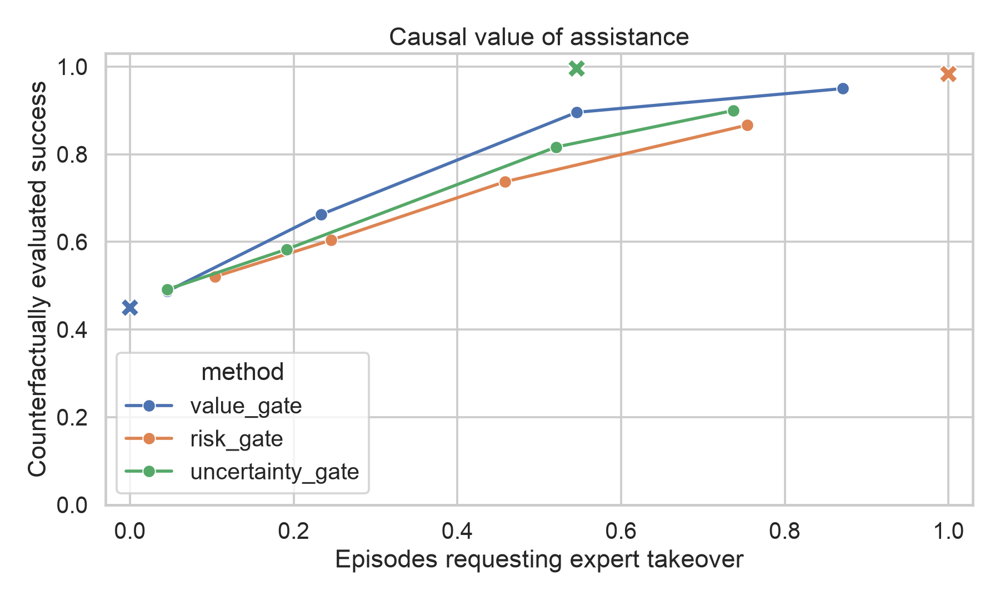
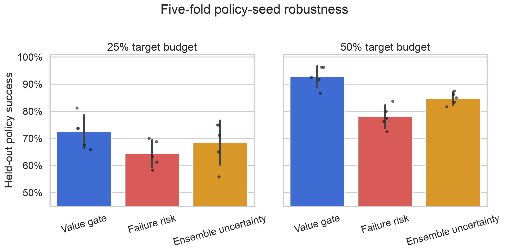
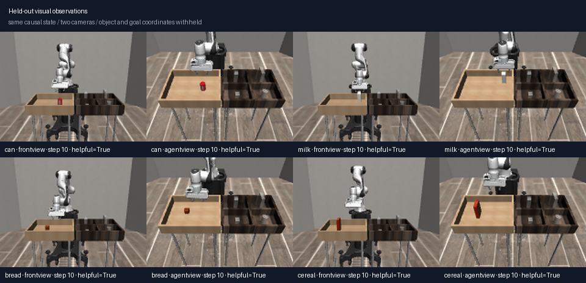

Helpful is not the same as risky.
A request is helpful only when the expert branch succeeds and the matched autonomous branch fails. Both outcomes and the signed value are preserved.
A robot should not ask only whether it will fail. It should learn whether expert takeover is worth requesting—from the state it is in right now.
Both panels begin at the same complete MuJoCo and controller snapshot from a held-out bread-policy episode. Autonomous continuation fails. Expert takeover succeeds.
At the approximately 25% operating point, the value gate reaches 66.2% success with 23.3% intervention. Failure risk reaches 60.4% with 24.6% intervention. Useful-request precision is 91.1% versus 62.7%.

Run a learned policy under nominal or disturbed deployment conditions.
Save simulator, controller, clock, observation-cache, and random-generator state.
Replay autonomous continuation and scripted expert takeover from the exact state.
Predict when takeover turns a failure into success; keep harmful takeovers visible.

Near 25% intervention, value leads risk by 8.1 ± 4.2 points. Near 50%, the lead is 14.7 ± 3.1 points. This five-fold analysis was added after the primary audit, so it is explicitly exploratory.
A frozen ImageNet ResNet-18 plus a learned value head sees RGB and robot proprioception, but no object or goal coordinates. It reaches 0.712 AUROC on the training camera and 0.696 zero-shot on a second camera. Yet recall at a fixed 0.5 threshold falls to 1.9% on the new view—a useful calibration failure.

A request is helpful only when the expert branch succeeds and the matched autonomous branch fails. Both outcomes and the signed value are preserved.
The result is exact for this simulator and scripted expert. It does not identify a specific person's intervention value or establish sim-to-real transfer.
Snapshot code, branch outcomes, thresholds, episode records, cross-seed folds, optional visual probe, human-takeover interface, figures, report, and video live in one free repository.
git clone https://github.com/ethanvillalovoz/intervenesim.git
cd intervenesim
uv sync --locked --extra dev
uv run intervenesim doctor
uv run intervenesim research --config configs/research.yaml
uv run intervenesim value-research --config configs/value.yamlThe earlier InterveneSim-X study found that recovery labels beat equal-count clean labels by 22.8 points across five seeds. InterveneSim-Value builds on that result by replacing failure prediction with matched causal intervention value.